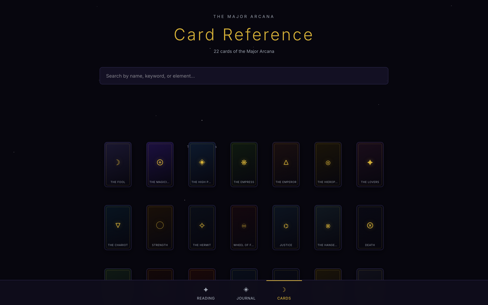
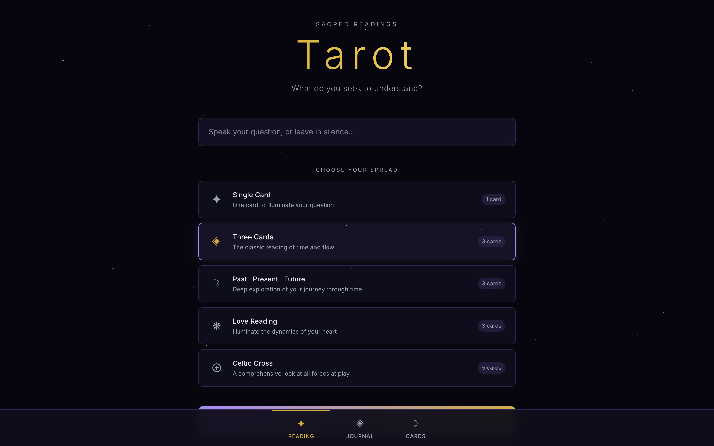
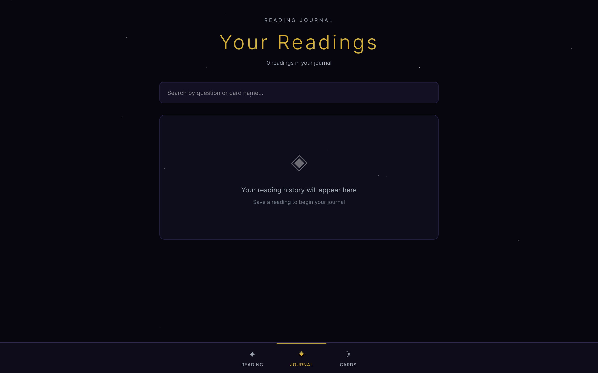

Atmospheric tarot reader with five spreads, flip-card animations, full Major Arcana deck, and a personal reading journal.



# Tarot — Promo Kit for Affiliates
**Product:** Tarot — Atmospheric tarot readings with flip animations
**Price:** $17 one-time
**Your link:** https://whop.com/myfileapps/tarot (replace with your affiliate URL)
**Commission:** 50% per sale = ~$8.5
---
## Screenshots
- `home.png` — Tarot home with reading types
- `cards.png` — Atmospheric card deck with flip animations
- `journal.png` — Reading journal with personal notes
---
## Twitter / X (10 posts)
1. ```
Built tarot — atmospheric tarot readings with flip animations.
No subscription. No ads. Just code you own.
$17 one-time → run it forever.
{your_link}
```
2. ```
Stop paying monthly for tarot tools.
Tarot: atmospheric tarot readings with flip animations.
Self-hosted. Yours forever.
$17. {your_link}
```
3. ```
Spiritual creatorss — this is for you.
Full Next.js source code. Atmospheric tarot readings with flip animations.
Deploy on Vercel in 5 mins.
$17 once. {your_link}
```
4. ```
You can charge clients to use this app.
Or run it for yourself.
Either way — $17, you own the code.
{your_link}
```
5. ```
Atmospheric tarot readings with flip animations.
Add it to your stack today.
$17 one-time. {your_link}
```
6. ```
indie devs: stop building from scratch.
Tarot template = $17, deploys in minutes, real users will pay to use it.
{your_link}
```
7. ```
Bought Tarot template last week, deployed it the same day.
$17. Forever.
{your_link}
```
8. ```
Best $17 I spent this month — full Next.js tarot app.
Atmospheric tarot readings with flip animations.
{your_link}
```
9. ```
Tarot app for sale. One time $17.
Atmospheric tarot readings with flip animations.
Built in TypeScript, runs anywhere.
{your_link}
```
10. ```
Tired of subscription tarot tools?
This one is yours forever for $17.
Source code included.
{your_link}
```
---
## Reddit (5 posts)
### r/SideProject
```
Title: I bought a Next.js tarot app template for $17 and shipped in a weekend
Spent $17 on this Tarot template — full source. Atmospheric tarot readings with flip animations. Runs entirely in localStorage, no backend.
Used it as the base for my own side project. Took 2 evenings to rebrand. Already has paying users.
Link: {your_link}
```
### r/witchcraft
```
Title: $17 one-time SaaS templates instead of building from scratch
Just used "Tarot" — tarot app template. Atmospheric tarot readings with flip animations. Full Next.js source code, no subscription on the template, no monthly fees.
Way faster than starting from a Figma file. Anyone else using template marketplaces to ship faster?
{your_link}
```
### r/tarot
```
Title: Tarot app template (Next.js + TS) — $17 one-time
Sharing because it saved me a week:
- Atmospheric tarot readings with flip animations
- Full TypeScript source
- localStorage only, no backend dependencies
- Deploys on Vercel in minutes
{your_link}
```
### r/Entrepreneur
```
Title: Bought a $17 tarot template, charging users for access
Found this template, modified it for paid users, set up Stripe. The template paid for itself within days.
Anyone else flipping these one-time templates into recurring SaaS?
{your_link}
```
### r/webdev
```
Title: One-time $17 tarot app — anyone tried building a service with it?
Found this Next.js template — Atmospheric tarot readings with flip animations. $17 one-time, no subscription.
Curious if anyone has launched a paid service using a template like this.
{your_link}
```
---
## Telegram / Discord DM (3 templates)
### Cold DM #1
```
Hey — saw you're into [spiritual creators].
Found a $17 one-time Next.js tarot app template. Atmospheric tarot readings with flip animations. Full source code.
Could be a good base for your own thing. {your_link}
```
### Cold DM #2
```
Quick one — I get 50% commission if you grab this $17 tarot template via my link, so I'm sharing widely.
It's actually solid: Atmospheric tarot readings with flip animations. TypeScript Next.js, deploys on Vercel.
{your_link}
```
### Repost in groups
```
For anyone building spiritual creators side projects:
Tarot template — $17 one-time, no subscription
Atmospheric tarot readings with flip animations
Full Next.js source
{your_link}
```
---
## TikTok / Reels script (30s)
```
[Hook 0-3s — show the home screen]
"You're paying monthly for tarot apps??"
[3-10s — show feature page]
"This template gives you the same thing. Atmospheric tarot readings with flip animations."
[10-20s — show another feature]
"Self-hosted. Your data, your code."
[20-27s — show stats / detail view]
"Full TypeScript source. Deploys on Vercel."
[27-30s — CTA]
"$17 one-time. Link in bio."
```
---
## Hashtags
```
#tarot #spiritual #witchy #indiedev #nextjs #webdev
```
---
## Where to post (priority order)
1. **Twitter/X** — thread + reply under spiritual creators accounts
2. **Reddit** — r/SideProject, r/witchcraft, r/tarot, r/Entrepreneur, r/webdev
3. **IndieHackers** — post in relevant section
4. **Telegram** — spiritual creators channels, indie hacker channels
5. **TikTok** — record screen, hook with the problem this app solves
6. **Pinterest** — pin the home screenshot, link to your URL
7. **Facebook** — spiritual creators groups, indie hacker groups